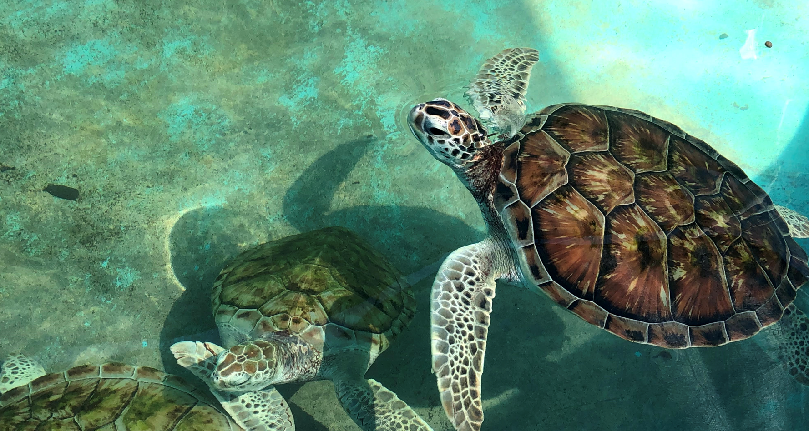
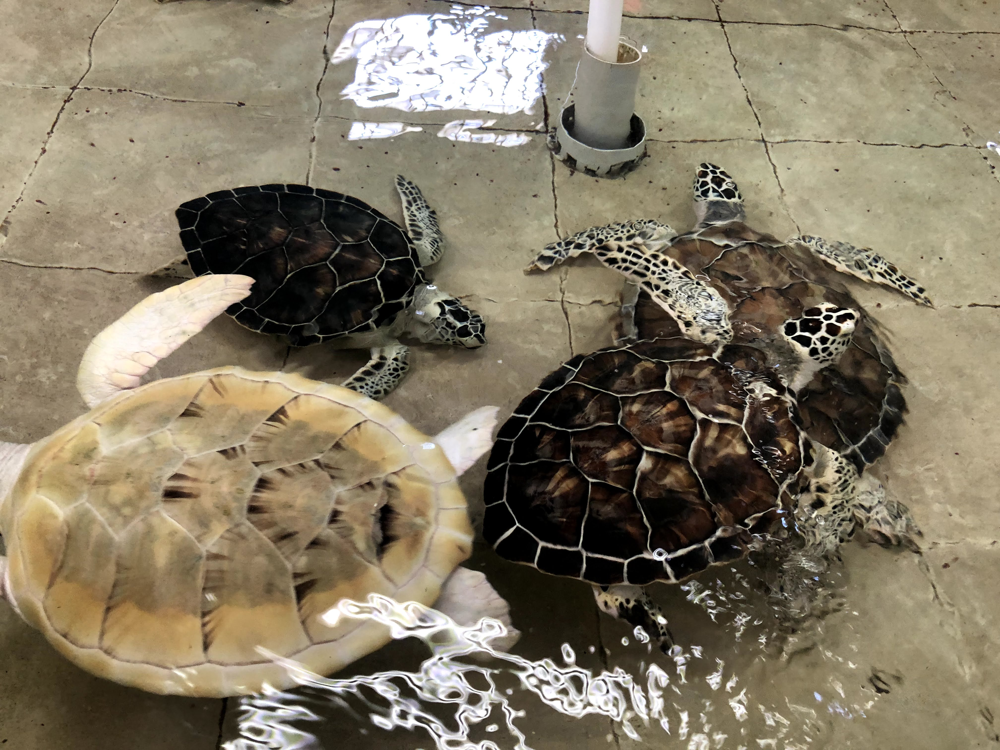
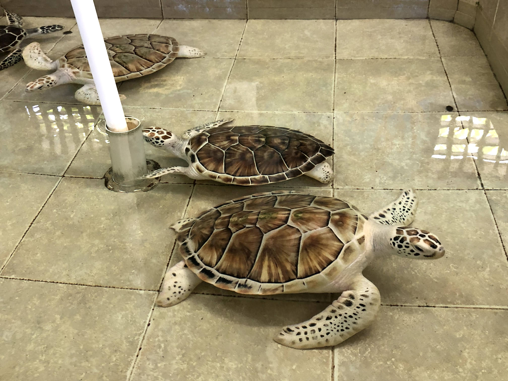

About 100 people have helped with events, cleanups, and outreach. If you want to join the next one, start here.
Four events, including a charity volleyball tournament. About $4,500 raised and passed to turtle centers in Cancun and Florida.
We are not a 501(c)(3). If you give, we pass the money to partner programs. We do not take card numbers on this site.
Wesley Deklich started Marine Turtle Foundation as a student project: recruit volunteers, run events, send the proceeds to people already doing turtle rescue and nesting protection. Some of the threats turtles face are pollution, coastal development, and climate change. We do not pretend to run a global NGO. We raise a few thousand dollars and show up for cleanups.



A small student-led group. We support local turtle work in Mexico and Florida; we do not replace it.
These pages describe coasts we have volunteered on, raised money for, or directed people toward. For the events we actually ran and the $4,500 we passed on, see Events.
Partner program with Flora, Fauna y Cultura de Mexico. Volunteer at campamentos tortugueros on 13 nesting beaches including Xcacel and Tulum.
Field stories, project updates, and educational articles from Tulum, Xcacel, Costa Rica, Florida, and beyond.